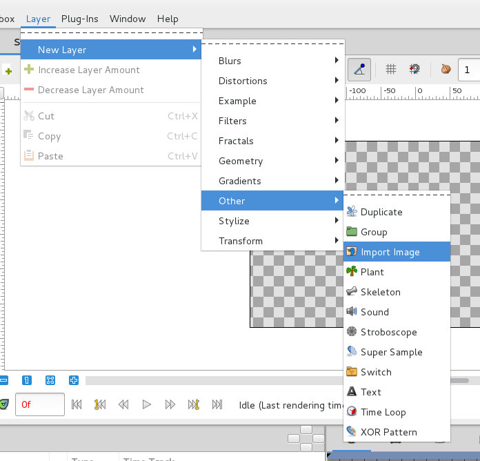
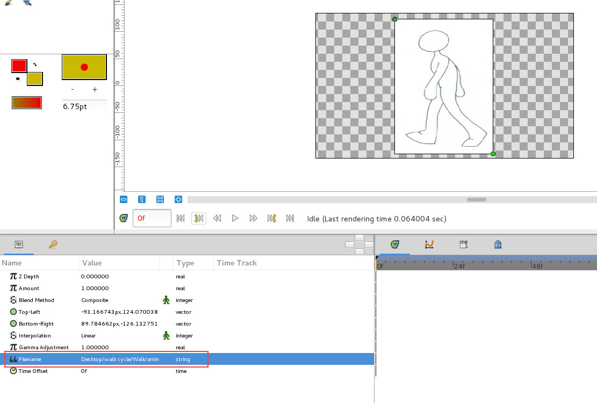

Uma duas funcionalidades menos conhecidas do Synfig é a capacidade para importar uma sequência de imagens. Na realidade, o Synfig interpreta um ficheiro de texto com extensão .lst onde surge a informação sobre as FPS e a localização das imagens a importar.
Esta funcionalidade é sobretudo útil para importar referência de animação/desenho, imagens para desenhar por cima ou para guiar a animação.
No exemplo abaixo iremos utilizar os recursos disponibilizados na wiki do Synfig.
Como vamos importar as 4 imagens abaixo, grave as mesmas para uma pasta no seu computador.
Através de um ficheiro .lst com o conteúdo apresentado em baixo.
FPS 4 frame_01.jpg frame_02.jpg frame_03.jpg frame_04.jpg frame_01.jpg frame_02.jpg frame_03.jpg frame_04.jpg frame_01.jpg frame_02.jpg frame_03.jpg frame_04.jpg frame_01.jpg frame_02.jpg frame_03.jpg frame_04.jpg frame_01.jpg frame_02.jpg frame_03.jpg frame_04.jpg frame_01.jpg frame_02.jpg frame_03.jpg frame_04.jpg frame_01.jpg frame_02.jpg frame_03.jpg frame_04.jpg frame_01.jpg frame_02.jpg frame_03.jpg frame_04.jpg frame_01.jpg frame_02.jpg frame_03.jpg frame_04.jpg frame_01.jpg frame_02.jpg frame_03.jpg frame_04.jpg frame_01.jpg frame_02.jpg frame_03.jpg frame_04.jpg frame_01.jpg frame_02.jpg frame_03.jpg frame_04.jpg frame_01.jpg frame_02.jpg frame_03.jpg frame_04.jpg
Se não quiser criar o seu próprio ficheiro, pode descarregar o exemplo de .lst aqui.
1. Comece por criar uma nova layer: Layer > New Layer > Other > Import Image
2. No parâmetro Filename, selecione o ficheiro .lst. A layer deverá agora exibir uma sequência de imagens. Estas vão mudando se avançar na timeline :)
